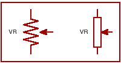
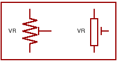
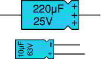
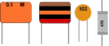
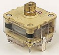
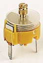
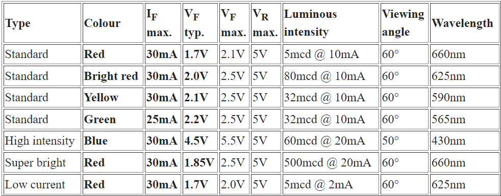

Resistor
A resistor is a component of an electrical circuit that resists the flow of electrical current. A resistor has two terminals across which electricity must pass, and is designed to drop the voltage of the current as it flows from one terminal to the next. A resistor is primarily used to create and maintain a known safe current within an electrical component.
Resistor
Symbol
(1) Fixed Value Resistor
Resistor Color Code Chart:
| Colour | Digit | Multiplier | Tolerance |
| Black | 0 | 1 | |
| Brown | 1 | 10 | ± 1% |
| Red | 2 | 100 | ± 2% |
| Orange | 3 | 1000 | |
| Yellow | 4 | 10,000 | |
| Green | 5 | 100,000 | ± 0.5% |
| Blue | 6 | 1,00,000 | ± 0.25% |
| Violet | 7 | 10,000,000 | ± 0.1% |
| Grey | 8 | ± 0.05% | |
| White | 9 | ||
| Gold | 0.1 | ± 5% | |
| Silver | 0.01 | ± 10% |
Resistor Color Code Example:
- The first band gives the first digit.
- The second band gives the second digit.
- The third band indicates the number of zeros.
- The fourth band is used to shows the tolerance (precision) of the resistor
(2) Variable Resistor
There are two types of Variable Resistors
Potentiometer
Preset
Variable resistors consist of a resistance track with connections at both ends and a wiper which moves along the track as you turn the spindle. The track may be made from carbon, cermet (ceramic and metal mixture) or a coil of wire (for low resistances). The track is usually rotary but straight track versions, usually called sliders, are also available.
Variable resistors may be used as a potentiometer with all three connections in use. Miniature versions called presets are made for setting up circuits which will not require further adjustment. Variable resistors are often called potentiometers in books and catalogues. They are specified by their maximum resistance, linear or logarithmic track, their physical size. The standard spindle diameter is 6mm.
Physical Structure

Variable
Potentiometer
Preset
Linear (LIN) track means that the resistance changes at a constant rate as you move the wiper.
Logarithmic (LOG) track means that the resistance changes slowly at one end of the track and rapidly at the other end, so
halfway along the track is not half the total resistance! This arrangement is used for volume (loudness) controls because the human ear has a logarithmic
response to loudness so fine control (slow change) is required at low volumes and coarser control (rapid change) at high volumes
Function:- Resistor has a lot of functions. The resistor has function of current limiting and voltage drop. when used with other devices like capacitors and inductors it can have a vast variety of functions depending upon in which configuration it is used.
Specification:-
- Power Rating (W)
- Resistive Value (Ω Value)
Resistors are rated by the value of their resistance ( Ω Value)
Capacitors
A Capacitor is a passive electronic component that stores energy in the form of an electrostatic field. In its simplest form, a capacitor consists of two conducting plates separated by an insulating material called the dielectric. Capacitance is directly proportional to the surface areas of the plates, and is inversely proportional to the plates' separation. Capacitance also depends on the dielectric constant of the dielectric material separating the plates.
There are two types of Capacitors
-
Polarised(Electrolytic Capacitors , Value Above 1uF)
Circuit Symbol
Physical Structure
A type of capacitor in which one plate is coated through electrolysis with an oxide to serve as the dielectric, while the other plate is replaced by an electrolyte. Electrolytic capacitors can achieve very high capacitance (>1uF) with very small sizes, but only act as capacitors as long as the current flows in one direction.
Measurement Value:- Its capacitance value(uF) and voltage level is given on the surface -
Unpolarised (Non- Electrolytic) Small Value below 1uF
Circuit Symbol
Physical Structure
It has no electrical polarization. So any direction you can use or measure.
Capacitor Number Code(for non electrolyte)
A number code is often used on small capacitors where printing is difficult:
- The 1st number is the 1st digit
- The 2nd number is the 2nd digit
- The 3rd number is the number of zeros to give the capacitance in pF.
- Ignore any letters - they just indicate tolerance and voltage rating.
- If there is no third digit(only two digit),then specified number is the capacitive value in pF
For example: 102 means 1000pF = 1nF (not 102pF!)
Three prefixes (multipliers) are used, µ (micro), n (nano) and p (pico):
- µ means 10-6 (millionth), so 1000000µF = 1F
- n means 10-9 (thousand-millionth), so 1000nF = 1µF
- p means 10-12 (million-millionth), so 1000pF = 1nF
Variable Capacitors
-
Gang Capacitor
A combination of two or more variable capacitors mounted on a common shaft to permit adjustment by a single control.
Circuit Symbol
Physical Structure
 -
Trimmer Capacitor
Trimmer capacitors (trimmers) are miniature variable capacitors. They are designed to be mounted directly onto the circuit board and adjusted only when the circuit is built. Trimmer capacitors are only available with very small capacitances, normally less than 100pF.
Circuit Symbol
Physical Structure

Specification of capacitor
- Voltage Rating: All capacitors have a voltage rating. This tells you how much voltage the dielectric (insulator) can withstand before allowing DC to pass between its plates
- Capacitor's Rating: The capacitance rating is there because the energy stored in a capacitor is W = 1/2CV2, where W is the stored energy in joules, C is the capacitance rating in frards, and V is the voltage on the cap. The cap's capacitance is a necessary specification because circuit design and performance hinge on having caps the correct value for the configuration of the circuit
Function: A capacitor stores electric charge. A capacitor is used with a resistor in a timing circuit. It can also be used as a filter, to block DC signals but pass AC signals
Diode
When a P-type semiconductor are diffuse in a N-type semiconductor in such a way that the contact surface is called diode. A diode is a specialized electronic component with two electrodes called the anode and the cathode. Most diodes are made with semiconductor materials such as silicon, germanium, or selenium. The fundamental property of a diode is its tendency to conduct electric current in only one direction. When the cathode is negatively charged relative to the anode at a voltage greater than a certain minimum called forward breakover, then current flows through the diode. If the cathode is positive with respect to the anode, is at the same voltage as the anode, or is negative by an amount less than the forward breakover voltage, then the diode does not conduct current. This is a simplistic view. The forward break over voltage is approximately six tenths of a volt (0.6 V) for silicon devices, 0.3 V for germanium devices, and 1 V for selenium devices.

Type of Diodes
There are many different types of diodes that are available for use in electronics design. But most useful diodes in our laboratory are:
- PN junction diode
- Zener Diode
- Light Emitting Diode(LED)
PN junction diode:- It is also two type, one is Germanium diode (Ge) and other is Silicon diode(Si). If we join a section of N-type semiconductor material with a similar section of P-type semiconductor material, we obtain a device known as a PN JUNCTION. The diode is nothing more than a two-element semiconductor device that makes use of the rectifying properties of a PN junction to convert alternating current into direct current by permitting current flow in only one direction.
Zener diode:-Zener diodes are used to maintain a fixed voltage. They are designed to 'breakdown' in a reliable and non-destructive way so that they can be used in reverse to maintain a fixed voltage across their terminals. The diagram shows how they are connected, with a resistor in series to limit the current
Zener diodes can be distinguished from ordinary diodes by their code and breakdown voltage which are printed on them. Zener diode codes begin BZX... or BZY... Their breakdown voltage is printed with V in place of a decimal point, so 4V7 means 4.7V for example. Zener diodes are rated by their breakdown voltage and maximum power.
Light Emitting Diodes(LEDs) A light-emitting diode (LED) is a semiconductor device that emits visible light when an electric current passes through it. The light is not particularly bright, but in most LEDs it is monochromatic, occurring at a single wavelength. The output from an LED can range from red (at a wavelength of approximately 700 nanometers) to blue-violet (about 400 nanometers). Some LEDs emit infrared (IR) energy (830 nanometers or longer); such a device is known as an infrared-emitting diode (IRED).

Typical values of forward voltage are:
IR: 1.2 V, Red: 1.85 V, Yellow: 2 V, Green: 2.15 V. The new blue LEDs will be somewhat higher (perhaps 3 V). These voltages are at reasonable forward current. Depending on the actual technology (i.e., compounds like GaAsP, GaP, GaAsP/GaP, GaAlAs, etc.),
The LED consists of a chip of semiconducting material doped with impurities to create a p-n junction. As in other diodes, current flows easily from the p-side, or anode, to the n-side, or cathode, but not in the reverse direction. Charge-carriers—electrons and holes—flow into the junction from electrodes with different voltages. When an electron meets a hole, it falls into a lower energy level, and releases energy in the form of a photon.
The wavelength of the light emitted, and thus its color depends on the band gap energy of the materials forming the p-n junction. In silicon or germanium diodes, the electrons and holes recombine by a non-radiative transition, which produces no optical emission, because these are indirect band gap materials. The materials used for the LED have a direct band gap with energies corresponding to near-infrared, visible, or near-ultraviolet light.
Diode specifications characteristics and parameters
The list below provides details of the various diode characteristics, and diode parameters found in the datasheets and specifications for diodes according to their Number specified on the device surface.
- Semiconductor material
- Forward voltage drop (Vf)
- Peak Inverse Voltage (PIV)
- Maximum forward current
- Leakage current
- Junction capacitance
- Package type
| Diode | Max. Current | Max. Reverse Voltage |
| 1N4001 | 1A | 50V |
| 1N4002 | 1A | 100V |
| 1N4007 | 1A | 1000V |
| 1N5401 | 3A | 100V |
| 1N5408 | 3A | 1000V |
Technical Data for LEDs
The table below shows typical technical data for some 5mm diameter round LEDs with diffused packages (plastic bodies). Only three columns are important and these are shown in bold. Please see below for explanations of the quantities.
| I(F) max. | Maximum forward current, forward just means with the LED connected correctly. |
| V(F) typ. | Typical forward voltage, VL in the LED resistor calculation. This is about 2V, except for blue and white LEDs for which it is about 4V. |
| V(F) max. | Maximum forward voltage. |
| VR max. | Maximum reverse voltage You can ignore this for LEDs connected the correct way round. |
| Luminous intensity | Brightness of the LED at the given current, mcd = millicandela. |
| Viewing angle | Standard LEDs have a viewing angle of 60°, others emit a narrower beam of about 30°. Wavelength The peak wavelength of the light emitted, this determines the colour of the LED. nm = nanometre. |
| Wavelength | The peak wavelength of the light emitted, this determines the colour of the LED. nm = nanometre. |
Bipolar Junction Transistor(BJT)
A transistor is a semiconductor device used to amplify and switch electronic signals and power. It is composed of a semiconductor material with at least three terminals for connection to an external circuit. The transistor is an arrangement of semiconductor materials that share common physical boundaries. Materials most commonly used are silicon, gallium-arsenide, and germanium, into which impurities have been introduced by a process called “doping".
Physical Structure
Physical Structure

Symbol
There are two types of standard transistors, NPNand PNP, with different circuit symbols.
The n-p-n junction transistor consists of two n-type semiconductors (called the emitter and collector) separated by a thin layer of p-type semiconductor (called the base).
The p-n-p junction transistor, consisting of a thin layer of n-type semiconductor lying between two p-type semiconductors, works in the same manner, except that all polarities are reversed
The leads are labeled base (B), collector (C) and emitter (E).
Transistor Testing with a Digital multimeter:
Set a digital multimeter to diode test and Red lead is + terminal and black lead is – terminal.
Note down the transistor number which is specified on the device surface.
Test each pair of leads both ways (six tests in total):
- The base-emitter (BE) junction should behave like a diode and conduct one way only.
- The base-collector (BC) junction should behave like a diode and conduct one way only.
- The collector-emitter (CE) should not conduct either way
- You have to note the how much forward bias voltage from these six tests.
Then conclude that the transistor is PNP or NPN
The diagram shows how the junctions behave in an NPN transistor. The diodes are reversed in a PNP transistor but the same test procedure can be used.
Specification
| Structure | This shows the type of transistor, NPN or PNP. The polarities of the two types are different |
| I(c) max. | Maximum collector current. |
| V(CE) max. | Maximum voltage across the collector-emitter junction. You can ignore this rating in low voltage circuits. |
| h(FE) | This is the current gain (strictly the DC current gain). The guaranteed minimum value is given because the actual value varies from transistor to transistor - even for those of the same type! Note that current gain is just a number so it has no units. |
| P(tot) max. | Maximum total power which can be developed in the transistor, note that a heat sink will be required to achieve the maximum rating. This rating is important for transistors operating as amplifiers, the power is roughly IC VCE. |